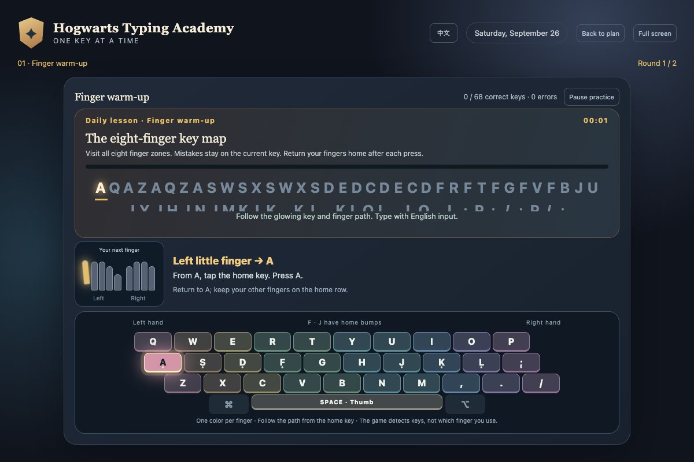
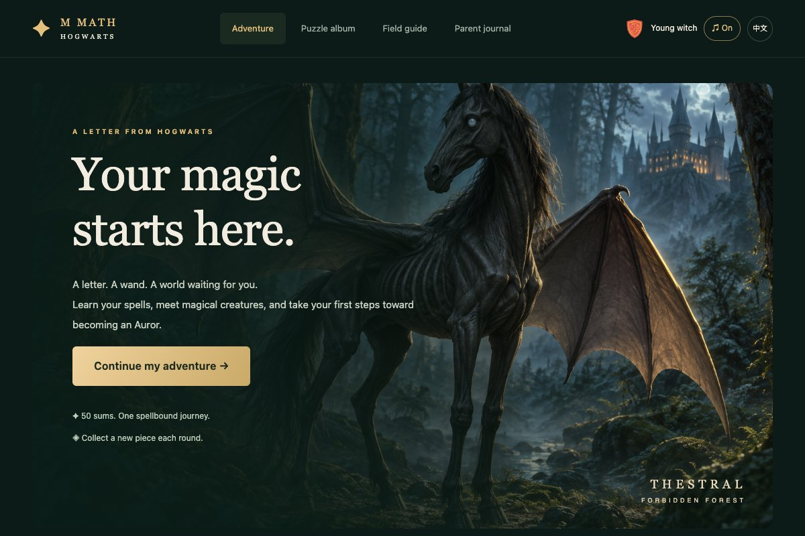
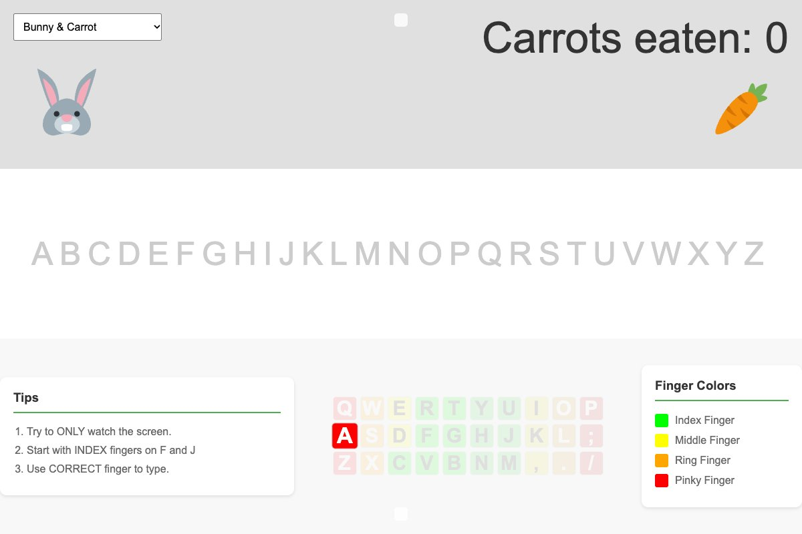
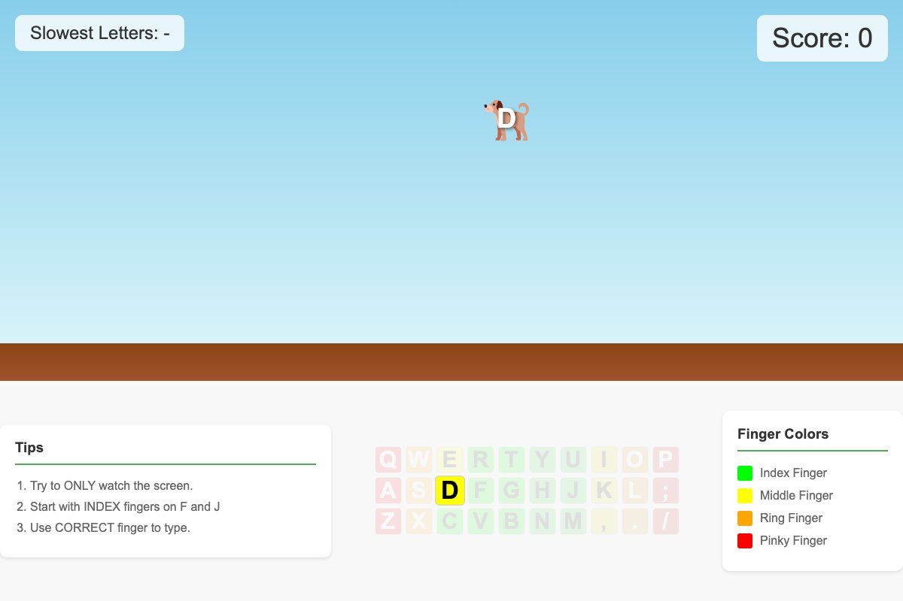
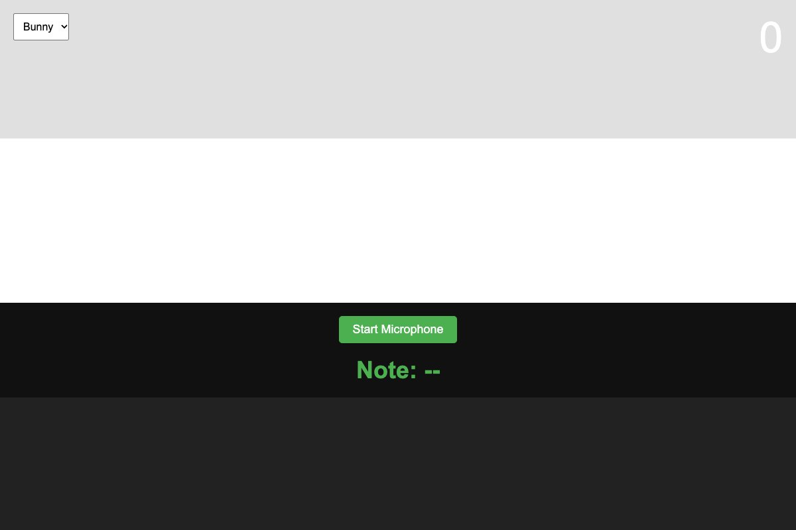
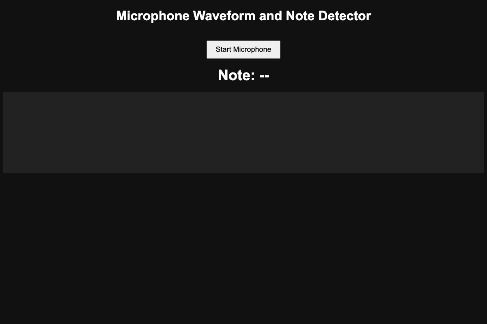
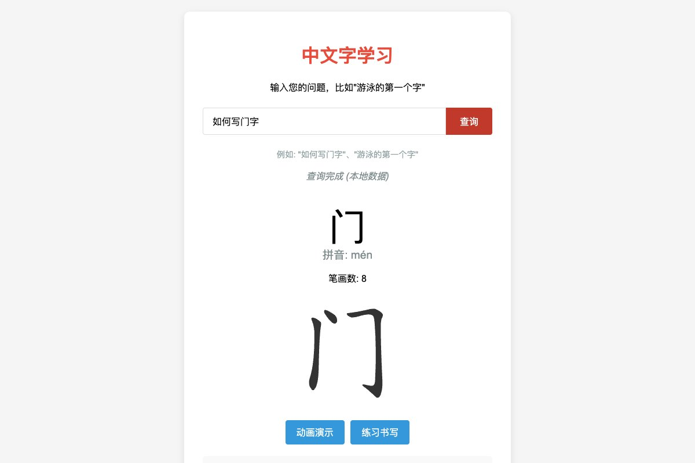

New adventureHogwarts Typing Academy
Learn the keyboard one spell at a time. Follow finger guides, warm up, and practise ten spells in a daily lesson planned by a parent.
Open activity
LITTLE GAMES FOR CURIOUS MINDS
A place to practise, experiment, and have a little fun.
Find your next adventure — one key, number, or note at a time.
PICK YOUR NEXT ADVENTURE
7 activities to explore

New adventureLearn the keyboard one spell at a time. Follow finger guides, warm up, and practise ten spells in a daily lesson planned by a parent.

New adventureChoose a house and explore a magical world. Complete timed arithmetic rounds to collect creature puzzle pieces and unlock weekly adventures.

Type your way from A to Z and help a hungry character reach its favorite treat. Color-coded keys make it easier to find the right finger.

Catch falling letters by pressing their keys before they reach the ground. Build your score and discover which letters need a little more practice.

Follow a sequence of musical notes with your voice or an instrument. Match the detected pitch to help your animal companion move toward its treat.

See what sound looks like. Turn on the microphone to explore a live waveform and discover the notes in your voice or an instrument.

Discover how Chinese characters are written. Look up a character, watch its stroke order, and practise writing it with an interactive guide.
Take your time. Try again. Every small discovery counts.